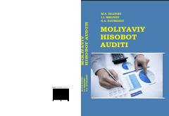

MHMoliyaviy hisobot auditining xalqaro standartlar asosidagi nazariyasi va amaliyoti.
Ushbu darslik moliyaviy hisobot auditining nazariy va amaliy asoslarini, xalqaro standartlar talablaridan kelib chiqqan holda yoritib beradi. Unda buxgalteriya balansi, moliyaviy natijalar va pul oqimlari to‘g‘risidagi hisobotlar auditi hamda auditorlik xulosalarini tuzish tartiblari batafsil bayon etilgan. Kitob oliy ta’lim muassasalarining magistratura talabalari va mutaxassislar uchun mo‘ljallangan.